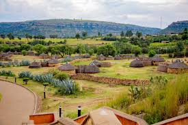

About the Park
Bokamoso Hoof Adventure Park is a horse riding and adventure park located in Maseru, Lesotho. The park opened in 2026 and offers a range of horse-related activities for visitors of all ages.
Our mission is to provide safe, fun, and memorable outdoor experiences for families, tourists, schools, and corporate groups. All our horses are well-trained and well-cared for. Our guides are experienced and certified.

What We Offer
- Guided horse trail rides (1 hour, 2 hours, half-day)
- Pony rides for young children
- Horse riding lessons for beginners
- Birthday party packages
- School educational trips
- Corporate team building events
- Photography sessions with horses
- Picnic areas with shade
Safety Guidelines
- All riders must wear a helmet (provided free)
- Listen to your guide at all times
- Children under 12 must be accompanied by an adult
- Wear closed-toe shoes and comfortable clothing
- Do not run near the horses
- Follow all instructions from staff
Opening Hours
Tuesday to Sunday: 9:00 AM - 5:00 PM
Closed on Mondays and public holidays
Last ride starts at 4:00 PM